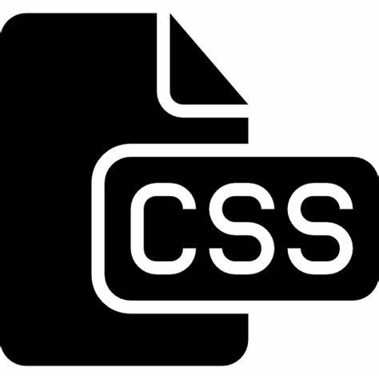
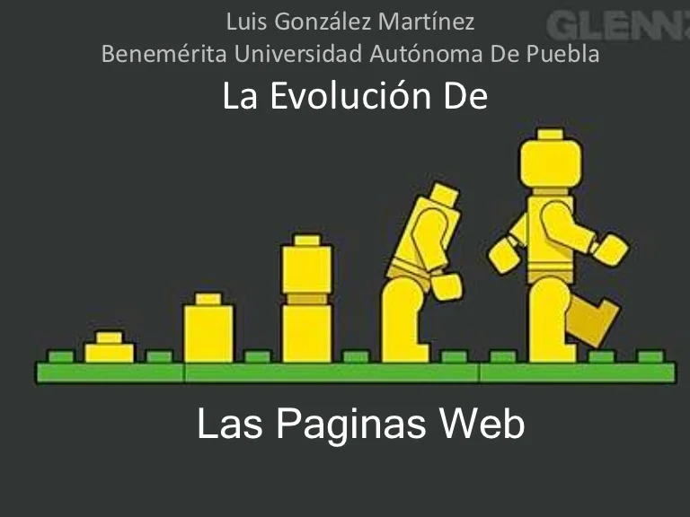
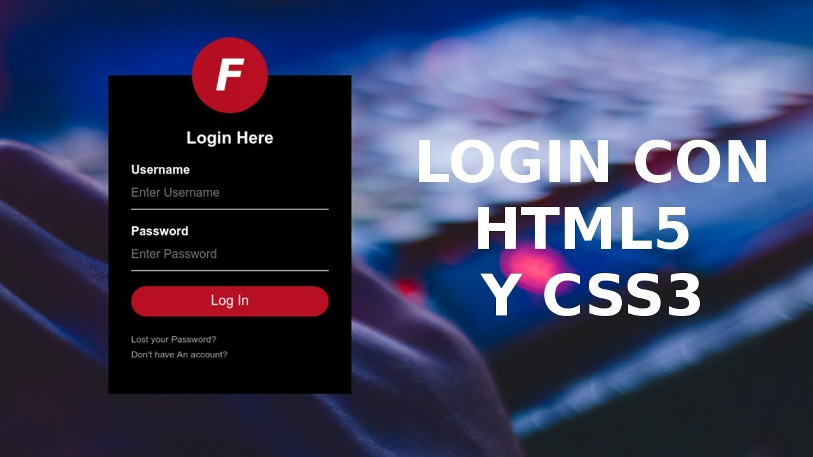

Bitacora de clase
01/02/2023
HTML5
En la clase de hoy vimos que significa HTML5,
es estandar osea que tiene reglas y formas en las que se puede
desarrollar y te ayuda a definir la estructura de una pagina web

02/02/2023
GITHUB
En la clase de hoy nos enseñaron mas de Github ha crear un
repositorio que sirve para almacenar todos tus archivos,trabajos o lo que deseesse requiere
que cada trabajo actualizado lleve su version es decir 1.0,1.1,1.2,1.3,etc tmbn requiere que
especifiques que fue lo que actualisaste en tu trabajo
;

08/02/2023-09/02/2023
CSS
En la clase de hoy vimos lo que es el CSS, son hojas de estilo que te permiten diseñar
tu pagina web a tu gusto y que sea de sierta forma agradable para el usuario agradable a su vista y que tenga una buena estructura para que al usuario no le cueste comprender que es lo que quieres compartirle, tambien vimos los componentes del CSS,
cambiar fuentes, tamaños del texto y que es un API y como agregarlo

15/02/2023
DISEÑO WEB
El dia de hoy el profe nos puso a investigar sobre como ha sido la
evolucion de las paginas web, cuando se creo la primera pagina web y como era su diseño, nos pidio
que compararamos y vieramos cual era la gran diferencia, eligio a 5 personas diferentes par que les mostrara su proyecto y darle criticas para mejorarlo

16/02/2023
JAVA SCRIPT
Hoy vimos que JS es un lenguaje de programación interpretado basado en
prototipos, imperativo, débilmente tipado y dinámico se utiliza principalmente del lado del cliente, implementado como parte de un navegador web
permitiendo mejoras en la interfaz de usuario y páginas web dinámicas
20/02/2023
LOGIN
El dia de hoy comenzamos a hacer un LOGIN para que el usuario se registre
en la pagina y el maestro nos dio una explicdacion de todo lo que tiene que llevar la base de datos
todo lo que se puede permitir y lo que no.
